Gestão de Usuários
Gestão de Ambientes
Gestão de Instrutores
Gestão de Turmas
Registrar Ocupação
Ocupação em Tempo Real
Ocupação em Tempo Real
Gerar Relatório

Sair
Relatórios
Início
Fim
Ambiente
Instrutor
Turma
Exportar
Data Início
Data Fim
Ambiente
Instrutor
Turma